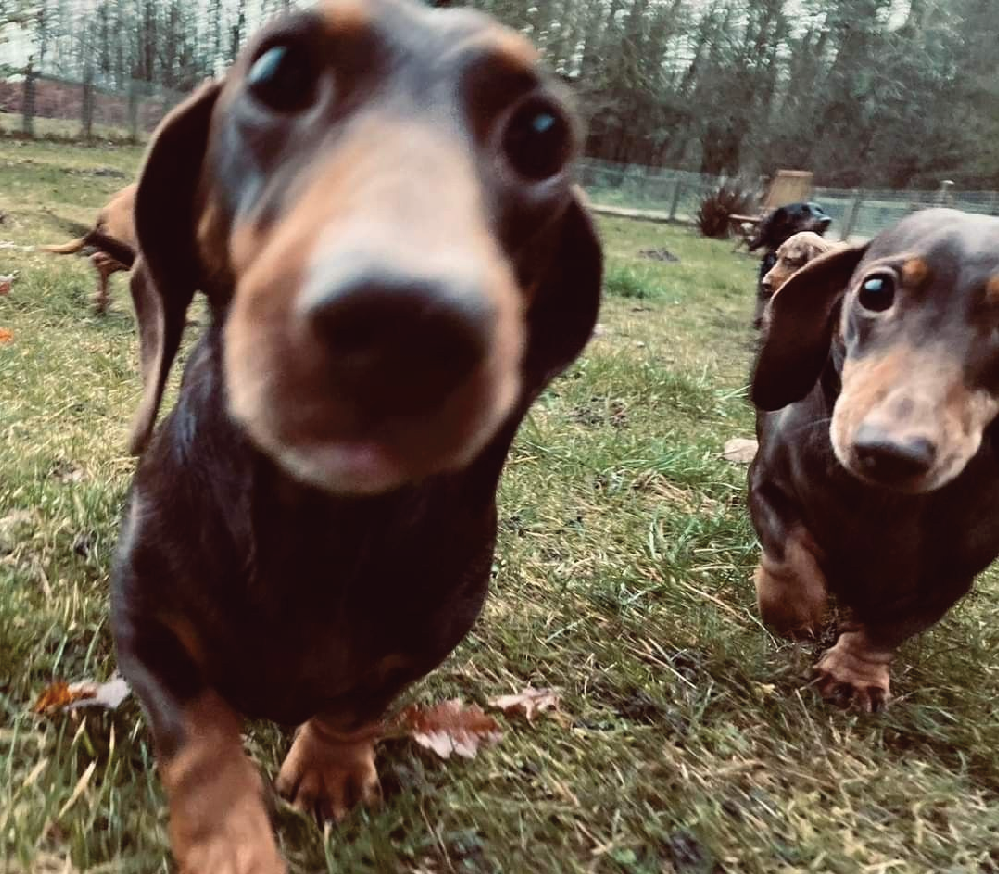
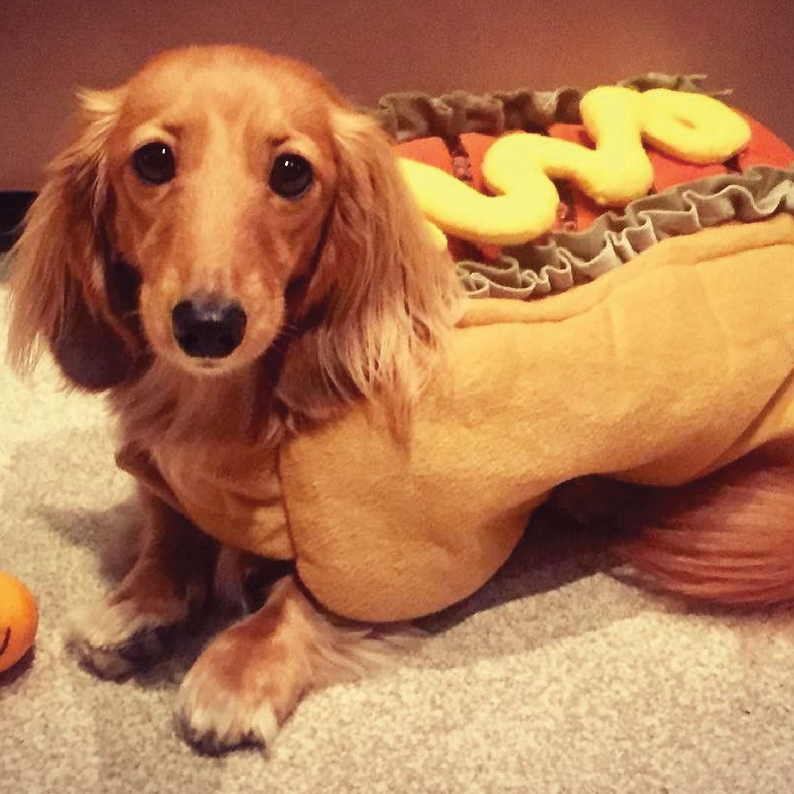

JOIN THE BITE!
Stand with Dachshunds everywhere and help us put an end to the unfair “weenie-dog” name! Join the Doxie Club today and show the world that Dachshunds are brave, bold, and anything but weenies!
CALL NOW!


OUR STORY
Dachshunds around the world became seriously tired of being called weenie-dogs, so in 2018, global Dachshund leaders came together to create the DoxieClub. Since then, the club has proudly fought to defend the dignity and reputation of Dachshunds everywhere, because short legs do not mean a small spirit!
OUR MISSION
The DoxieClub is dedicated to defending the honor, courage, and dignity of Dachshunds everywhere. Our mission is simple: to get everyone to stop calling us weenie-dogs because we are anything but weenies!
Ever wonder how a sausage and dachshunds ended up with the name “hot dog”? The story combines German traditions, American culture, and a bit of mystery.

Stand with Dachshunds everywhere and help us put an end to the unfair “weenie-dog” name! Join the Doxie Club today and show the world that Dachshunds are brave, bold, and anything but weenies!
CALL NOW!